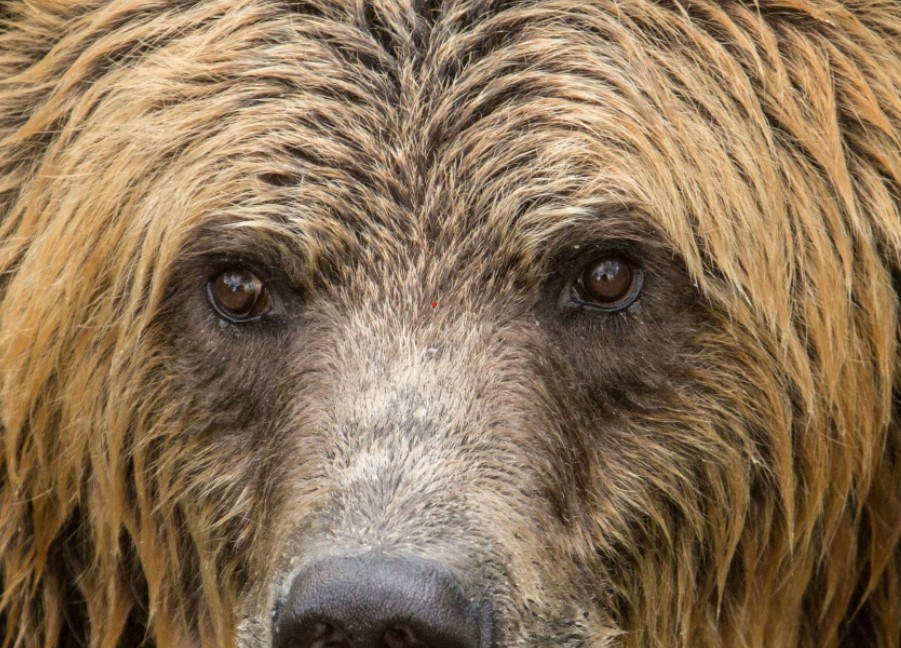

Bears
Why are bears so awesome? Well, just because.
Bears are keystone, or umbrella, species. Each population of bears is of great significance to the wider ecosystem in which it lives. If steps are taken to protect a bear population’s habitat then the whole related environment and the animals and plants within it also benefit.
At this point, I think we can all agree that bears are just the best. Here are some bear thoughts from:https://helloiamabear.com/
Bear Thoughts
Since I have no way to determine if I am good at being a bear, I really have no way to determine if I should have progressed in my bearness. I have never gotten any kind of clue or indication that I should be getting better at being a bear over some period of time. Should I be a better bear each day? Each year? Is my progress meant to be incremental or something that should be obvious and very easily noticeable? Or, maybe, I am not supposed to become a better bear. There is a chance that my bearness is not meant to grow. Maybe I am a bear, and I am supposed to be just the bear I am. Not a better one. Not a worse one. Just one, single bear that I already am until I am not a bear anymore.